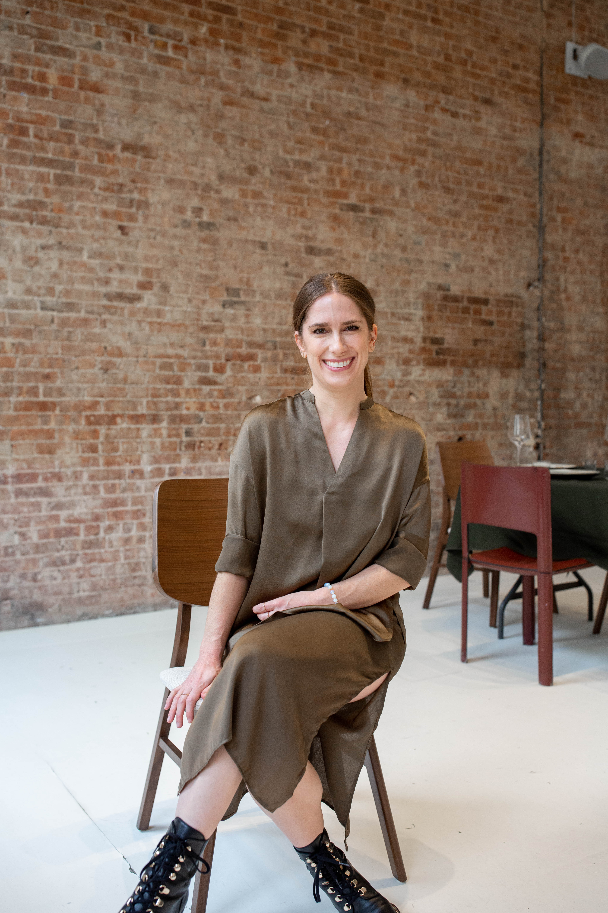
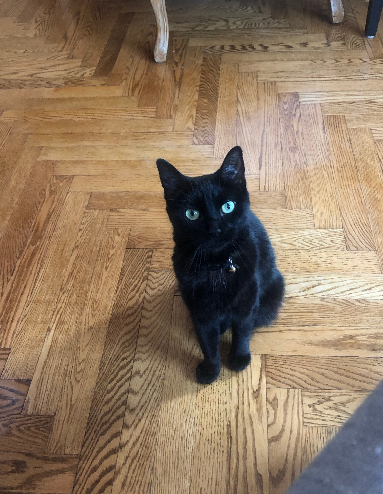

My name is Emily. I love creative outlets as a means to balance a vibrant work and personal life.
Professionally, I am interested in expanding my work within the library information science and technology fields. I am interested in libraries within performing arts spaces, particularly dance, as well as library services for those who are formerly or currently incarcerated. I also want to explore opportunities within archives, the art/ museum library world, and oral histories.
Outside of work I enjoy movement, daily walks in NYC parks, and trying to understand my whimsical kitten, Cora. I also enjoy language learning, culinary adventures, and keeping up with my book club. This site is to help me add photography back to that list.


I am doing my best to 'focus on focus' and spend less time in my inbox. But I like hearing from new friends. Please reach out!
For questions regarding use of my photography, please Email Me